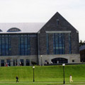

|  |
James A. Cannavino Library
Built in 2000
Library |
The beautiful stone library overlooking the Hudson River and campus green is named after longtime Trustee and former Chairman of the Board, James A. Cannavino. Developed as part of the worldwide Digital Library Initiative launched by the IBM Corporation to facilitate anytime, anywhere access to books, periodicals, works of art, film, music, and rare manuscripts, the Cannavino Library is a model for academic libraries of the new century. This 83,000-square-foot facility is a state-of-the-art electronic teaching and service center at the hub of an electronic network linking all parts of the Marist campus to libraries and databases throughout the world. In addition to providing a number of spacious study areas and attractive quiet rooms for research, conferences, and collaborative work, the Library also houses the Archives and Special Collections rooms, an office overlooking the campus for the College President, and a multi-media language center on the third floor. A small cafe on the main floor of the Library also provides the students with a gathering place where they can have a bite to eat, drink coffee, and not have to worry quite as much about the level of their voices.